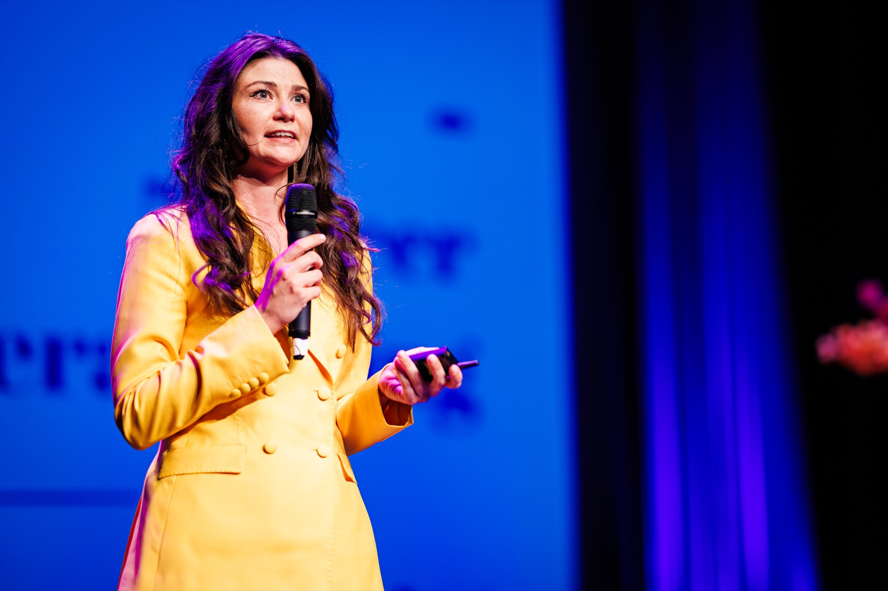
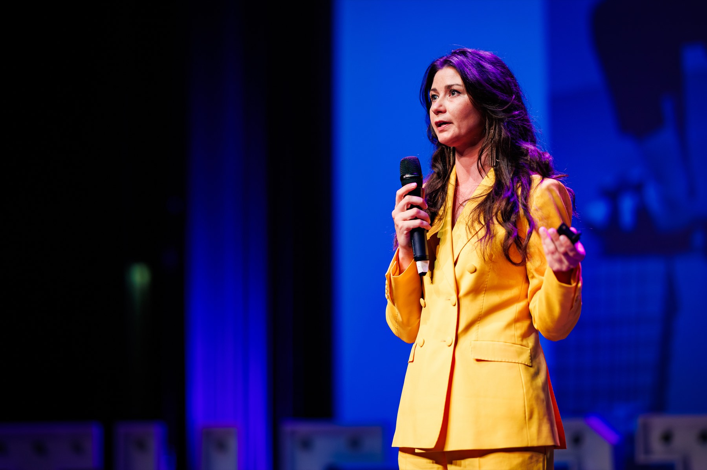
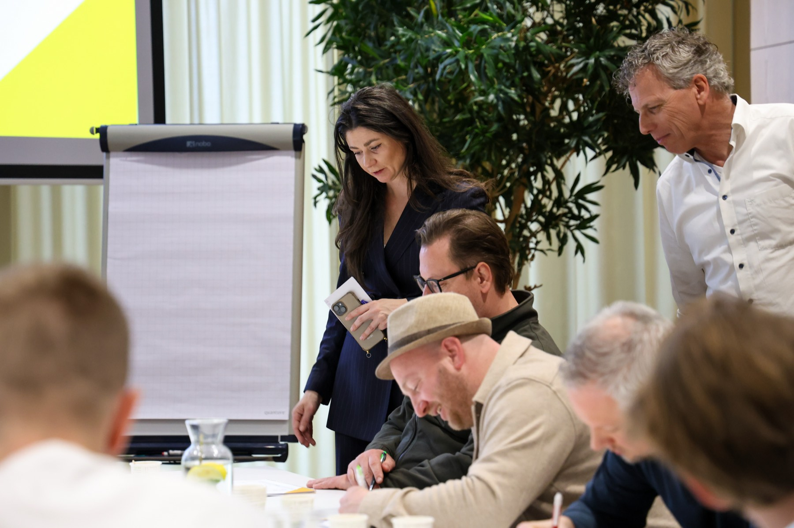
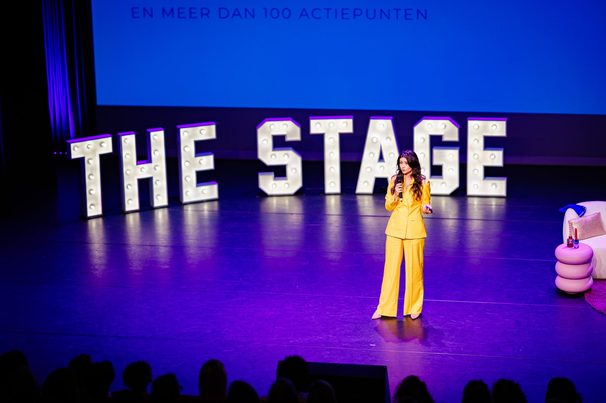

Eerder gewerkt met
Over mij
Ik sta voor groepen die iets met AI moeten: als spreker, dagvoorzitter, trainer of begeleider van een team. Geen techneut die komt uitleggen hoe een tool werkt, geen spreker die alleen inspireert. Ik weet waarom mensen níet meegaan en hoe je ze wél meekrijgt.

Het korte verhaal
Op school lag ik het beste bij de exacte vakken. Toch werd het bedrijfskunde, want een bètastudie lag voor een meisje in die tijd niet echt voor de hand. Ik specialiseerde me in verandermanagement en zag jarenlang hetzelfde patroon: het plan klopte bijna altijd, het gedrag eromheen niet.
Sindsdien zit mijn werk steeds op hetzelfde snijvlak: techniek die verandert en mensen die daarin mee moeten. Nieuwe systemen, een andere manier van werken, nu AI. Mijn kant is altijd de veranderkundige kant geweest. Hoe gaan mensen hier doorheen, waar haken ze af, en wat doen ze maandagochtend écht anders? Daar slaagt of sneuvelt een implementatie.
Dat doe ik niet in mijn eentje. Ik ben co-founder van Morgen., techpartner van het MKB. We helpen ondernemers digitaliseren en agentic werken: inspiratie via keynotes en ons boek, trainingen die mensen op weg helpen, en begeleiding van teams die het in de praktijk gaan doen.

In welke rol


Je hoeft geen techneut te zijn om met AI te werken. Slim werken is een vaardigheid, geen talent.
Eerder gewerkt met


Werk met mij
Stuur me het moment dat je in gedachten hebt: een congres, een kick-off, een training of een traject met je team. Je hoort binnen een dag of ik beschikbaar ben en of ik de juiste ben. Zo niet, dan denk ik mee over wie dat wél is.
Liever eerst zien wat ik doe? Bekijk een fragment van een keynote.